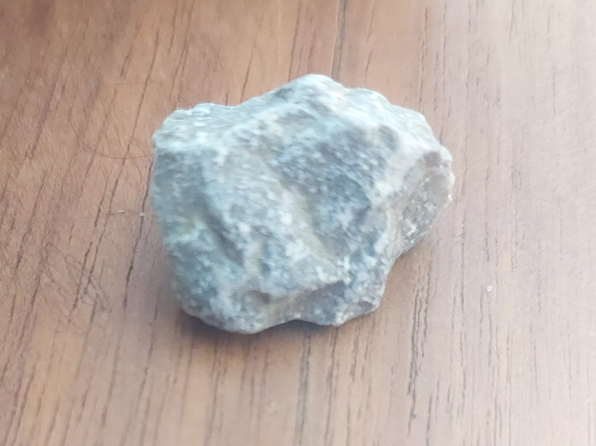
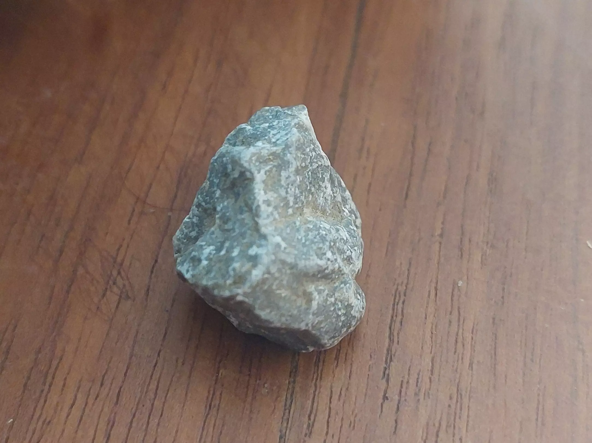
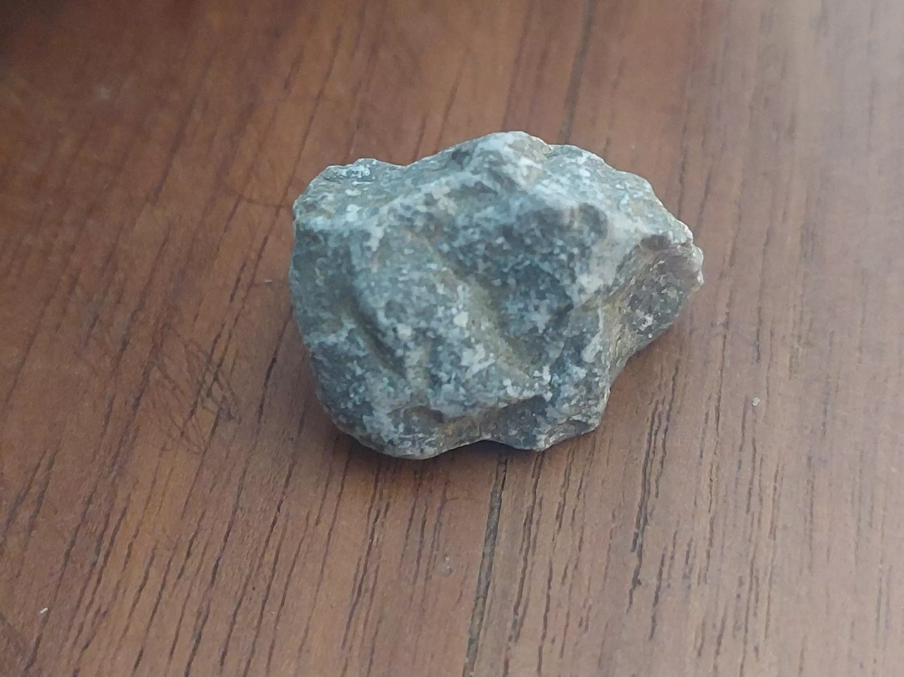
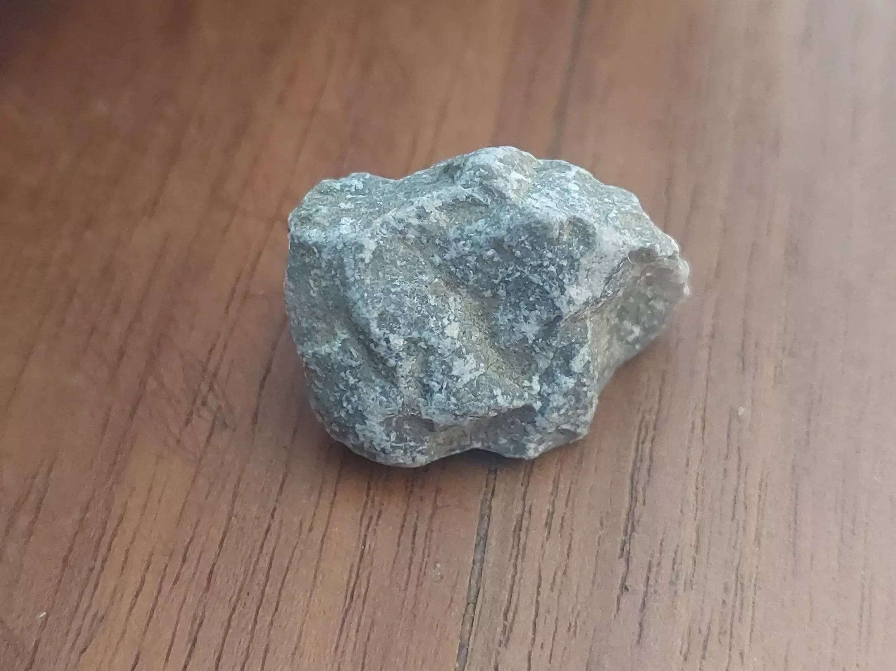
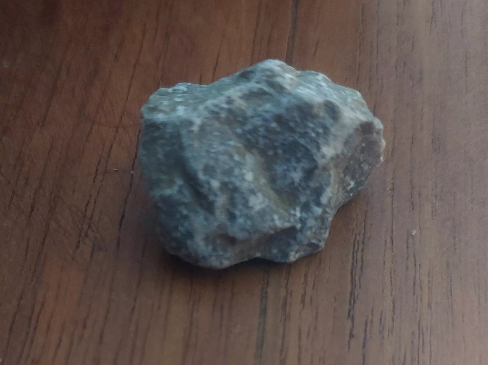
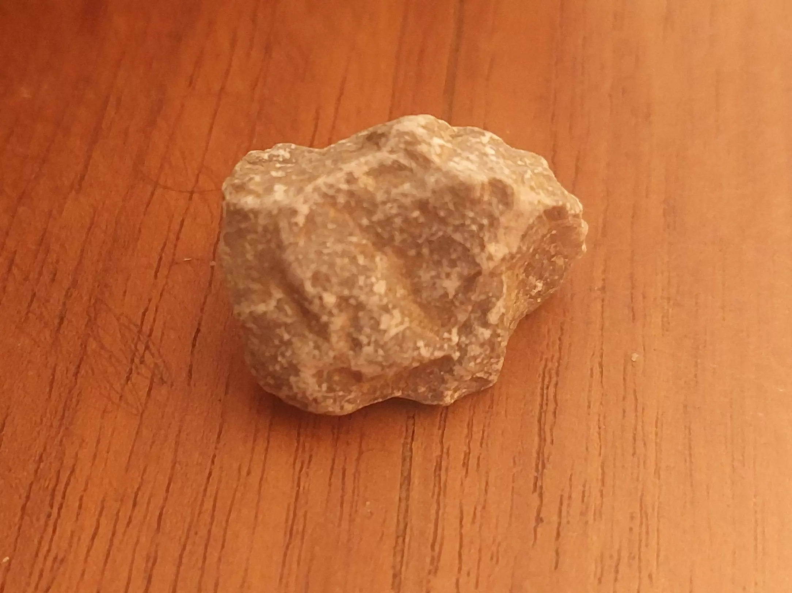

Willkommen auf unserer Kieselsteinseite! Wir sind ein leidenschaftliches Team, das sich der Schönheit und Vielfalt von Kieselsteinen verschrieben hat. 
Unsere Faszination für Kieselsteine begleitet uns schon seit vielen Jahren. Wir sind immer wieder erstaunt über ihre einzigartigen Formen, Farben und Texturen. Von glatten, runden Kieselsteinen, die durch das Rauschen des Meeres geschliffen wurden, bis hin zu scharfen, facettierten Kieselsteinen, die in Bergflüssen gefunden werden - wir sind stets auf der Suche nach den schönsten und interessantesten Exemplaren. 
Unser Ziel ist es, Ihnen hochwertige Kieselsteine anzubieten, die Sie in Ihrem Zuhause, Garten oder als Schmuckstück tragen können. Wir glauben fest daran, dass die natürliche Schönheit von Kieselsteinen eine einzigartige Atmosphäre schafft und jedem Raum oder Outfit eine besondere Note verleiht. 
Egal, ob Sie sich für künstlerische Kieselsteinbilder, dekorative Akzente in Ihrem Garten oder individuelle Schmuckstücke interessieren - wir haben für jeden Geschmack und jedes Projekt die passenden Kieselsteine. Durch unsere sorgfältige Auswahl und Inspektion stellen wir sicher, dass Sie nur die besten und schönsten Kieselsteine erhalten. 
Unser Kundenservice ist uns sehr wichtig. Wir nehmen uns die Zeit, Ihre spezifischen Anforderungen und Wünsche zu verstehen, um Ihnen die bestmögliche Lösung anzubieten. Wir möchten sicher, dass Sie mit Ihrem Einkauf bei uns zufrieden sind und Ihre Kieselsteine voll und ganz genießen können. 
Wir laden Sie herzlich ein, unsere Kieselsteinseite zu erkunden und sich von der Welt der Kieselsteine inspirieren zu lassen. Wenn Sie Fragen haben oder weitere Informationen benötigen, zögern Sie nicht, uns zu kontaktieren. Wir freuen uns darauf, Ihnen bei der Erfüllung Ihrer Kieselsteinträume behilflich zu sein! 